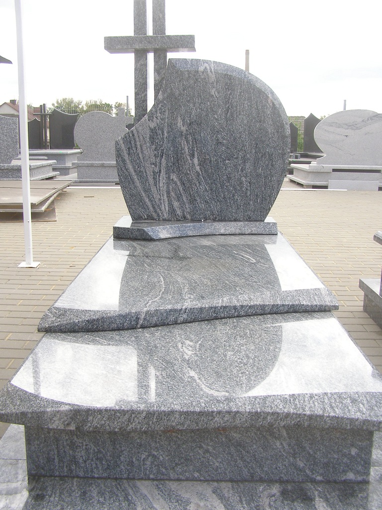
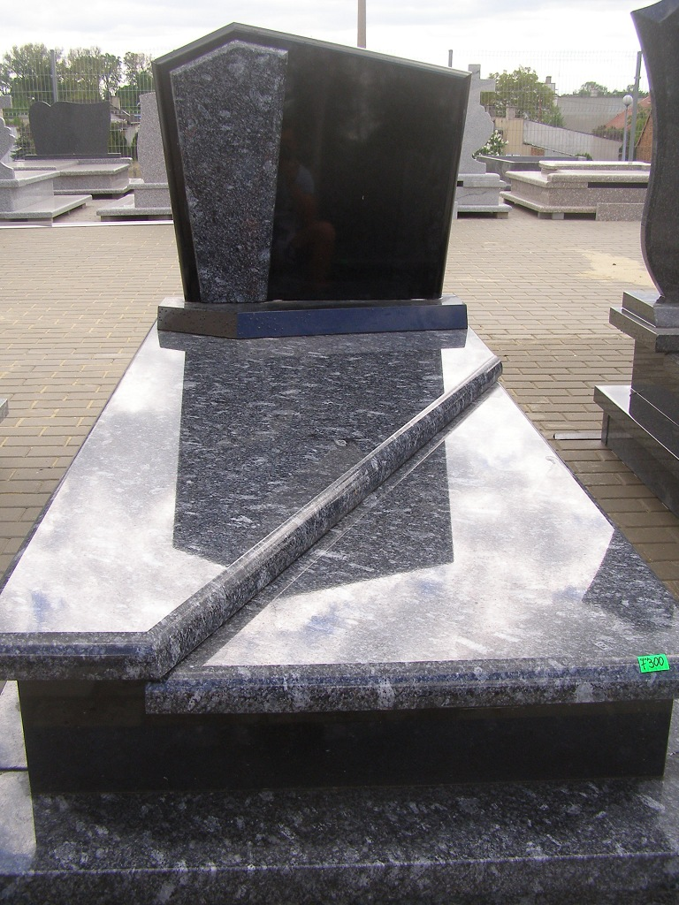

Specjalizujemy się w produkcji nagrobków. Granit obrabiamy bezpośrednio u siebie.

Podnosimy zapadnięte groby i wymieniamy pęknięte podkłady pod nagrobkami.
Porozmawiajmy o nagrobku.
Zakład kamieniarski Tomasz Bronka ul. Łódzka 109